4,2Mkr
Total kostnad för sjukfrånvaro under ett år för ett företag med 30 anställda, 40 000 kr i månadslön och 5 sjukdagar per person.
Källa: if.seElitidrottens testmetodik – för hela arbetsplatsen. Vi visar var riskerna finns innan de blir skador, sjukskrivningar och produktionsbortfall, och ger varje medarbetare en egen riskprofil att agera på.
Förstå maximal kapacitet, begränsningar och hälsostatus – för varje spelare och hela laget. Tester, data och uppföljning från start till mål, samlat på ett ställe.
Från 1 995 kr per medarbetare · exkl. moms
Förtroende från Brommapojkarna, Djurgården Hockey, Hammarby och IFK Värnamo
Testområden utan anmärkning
Bilden visar exempeldata.
Grundnivå satt för truppen
Bilden visar exempeldata.
Används av organisationer med högt ställda krav
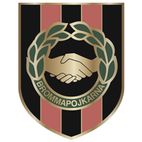
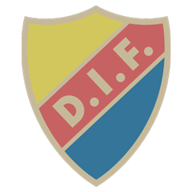
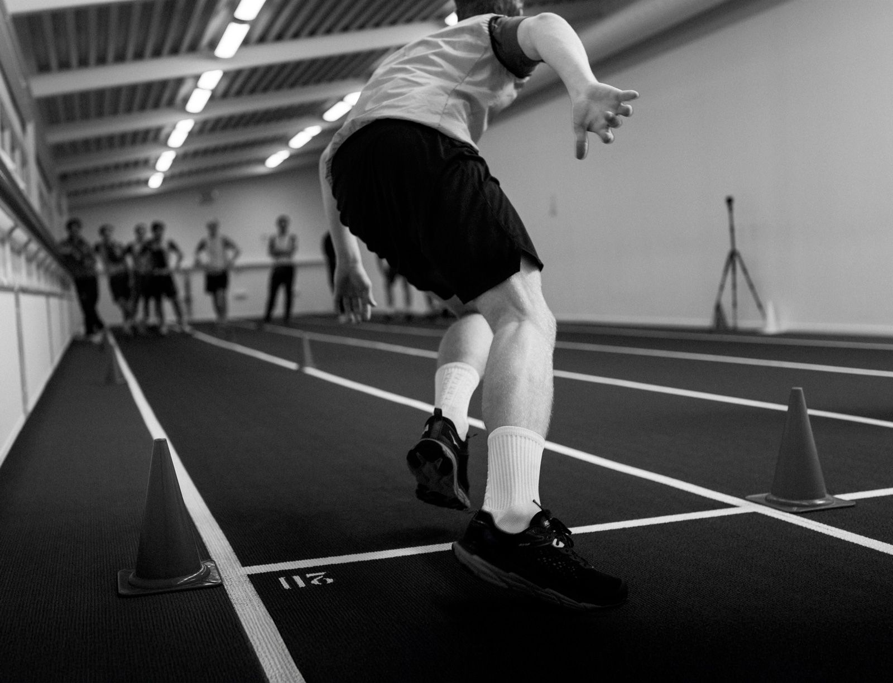
IdrottAtt förstå maximal kapacitet, begränsningar och hälsostatus är nyckeln till att frigöra idrottarens och lagets verkliga fysiska potential.
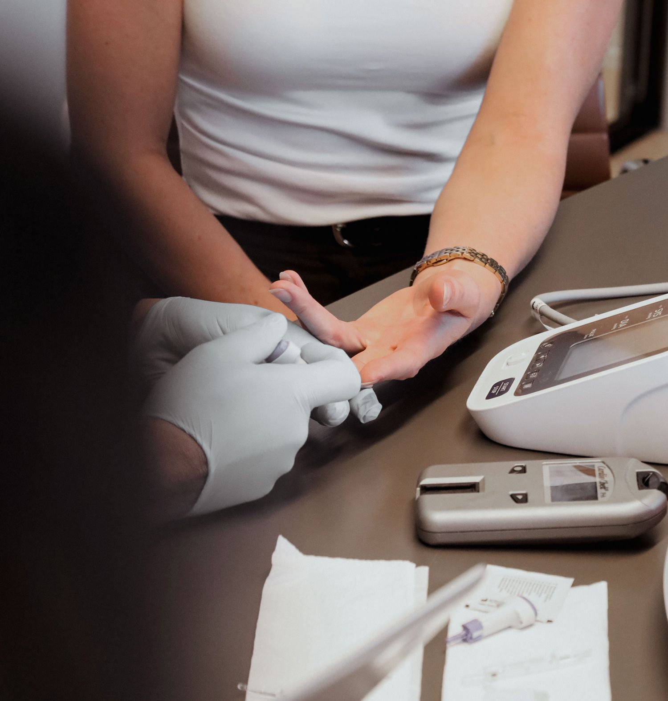
FöretagRegelbundna hälsotester och personlig coaching minskar sjukfrånvaron, höjer produktiviteten och stärker arbetskulturen.
Stress, hög sjukfrånvaro och låg energi hör till de största utmaningarna på svenska arbetsplatser – och påverkar både medarbetarnas välmående och företagets resultat.
Total kostnad för sjukfrånvaro under ett år för ett företag med 30 anställda, 40 000 kr i månadslön och 5 sjukdagar per person.
Källa: if.seuppger besvär kopplade till arbetet. Vanligast är trötthet, fysisk smärta, sömnstörningar, problem med rygg och nacke samt oro och utmattning.
Källa: ArbetsmiljöverketStressade medarbetare är tre gånger mer benägna att byta jobb.
Källa: Harvard Business Review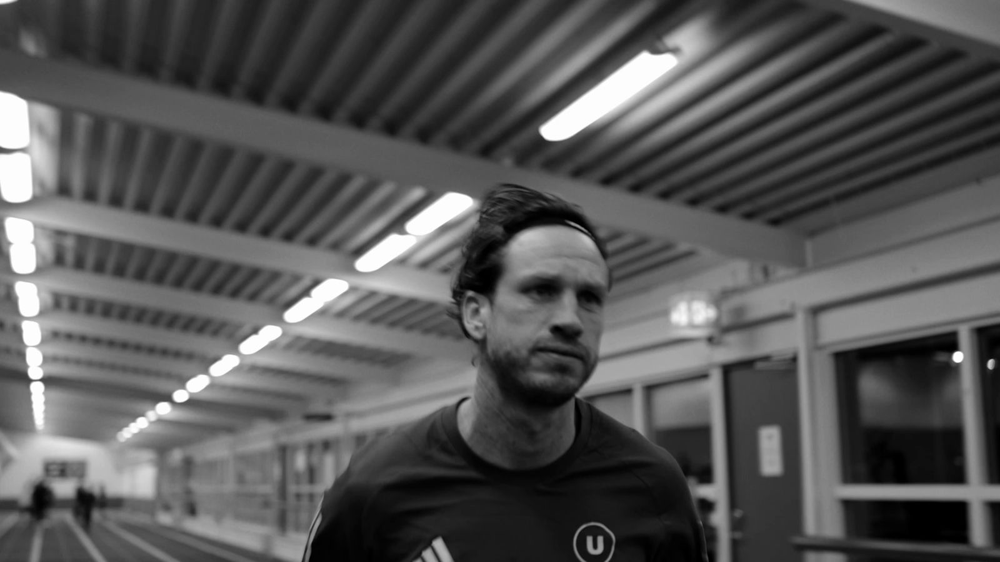
Samma testbatteri som i elitidrotten – anpassat efter er verksamhet och utfört av vårt testteam.
Evidensbaserade testmetoder och medicinsk, datadriven analys – för verklig förebyggande effekt.
Varje medarbetares värden analyseras av vårt team, som bedömer hälsoläget och identifierar eventuella risker.
Varje medarbetare får en personlig digital journal med resultat, trender och praktiska hälsoråd.
En företagsrapport med sammanställd hälsodata, trender och rekommenderade åtgärder på organisationsnivå.
Ett tydligt flöde där ni alltid vet vad som händer härnäst – och vem som ansvarar.
Vi går igenom era behov och tar fram en offert.
Infodokument med testval. Samtycke och PUB-avtal enligt GDPR.
Ordern skapas utifrån underlaget och signeras.
Testteamet bokar tid med er, genomför testerna och onboardar alla i appen.
Riskprofil till varje medarbetare, sammanställd rapport till er.
Uppföljningsmöte ungefär två månader senare.
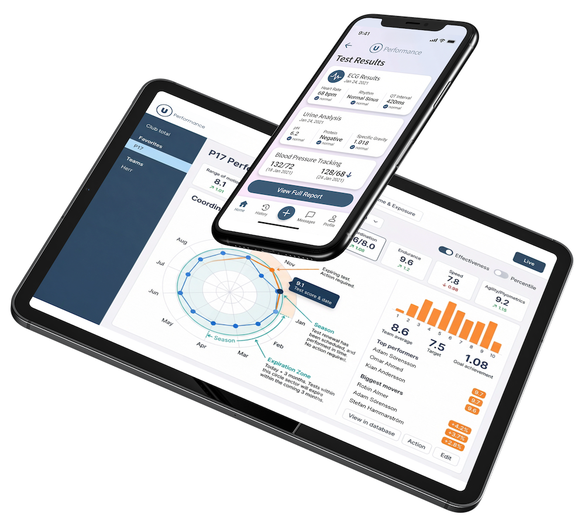
Allt som samlas in och analyseras lagras i plattformen, där varje medarbetare når sin egen data. Testtillfället blir en ögonblicksbild – appen gör det till ett program.
Ingår under en introperiod i alla paket
En helhetsplattform från start till mål för organisationer som vill ta hand om sina mest värdefulla tillgångar: spelarna.
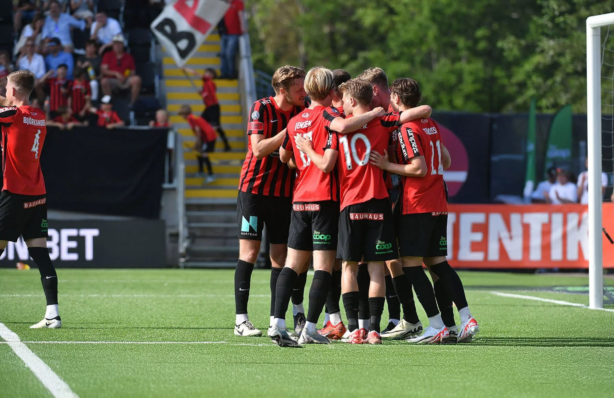
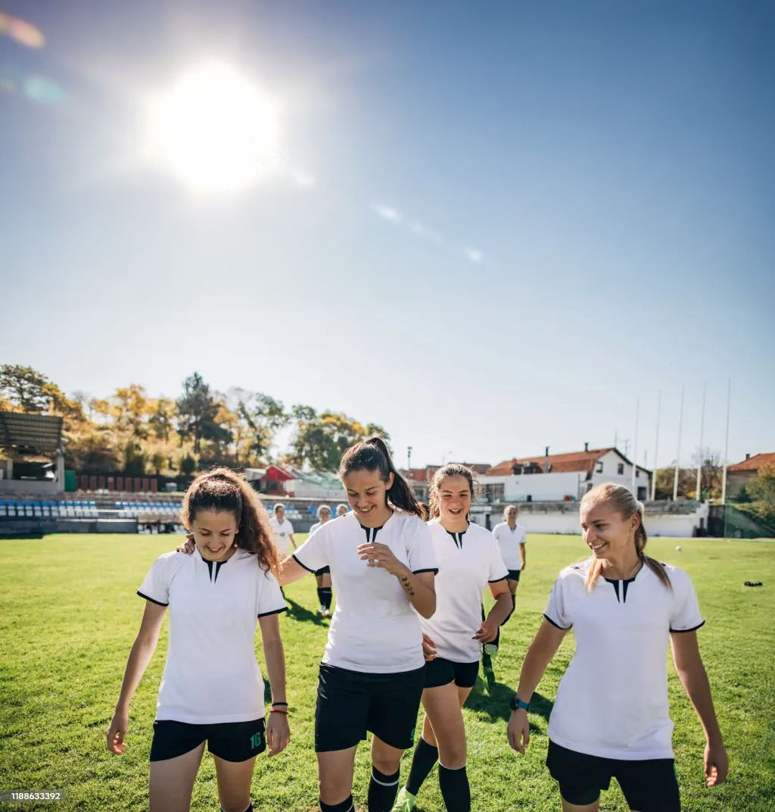
Säkerställ grundnivå för spelare och lag.
Mät förbättring över tid och effekten av träningen.
Förutsäg framtida prestationer och hitta svagheter.
Övervaka trötthet och följ protokoll för återgång till spel.
Stötta idrottaren att nå sin fulla kapacitet.
Alla paket bygger på Bas – vår grundläggande riskprofilering. Från 1 995 kr per medarbetare, exkl. moms. Ert upplägg räknar vi fram tillsammans med er.
Startpunkten – vet var riskerna finns.
Djupare bild av hjärta, kärl och rörlighet.
Vår mest kompletta kartläggning.
Vi sätter ihop rätt upplägg för er verksamhet på ett första möte – och räknar fram priset tillsammans med er, direkt på plats.
Boka en genomgångPriser exkl. moms. Medicinsk data hanteras av extern tredjepart.
Slutet av 70-talet. En ny tränare tar över IFK Göteborg. Med sig har han en ung, relativt oprövad fysioterapeut från USA.
Staben tittade på truppen och såg snickare, rörläggare och lagerarbetare som spelade fotboll på halvtid – utan stjärnor och utan pengar. Frågan blev inte hur man skulle få fler resurser, utan hur man fick ut det yttersta av de resurser man redan hade.
Svaret var att utgå från varje individ.
Först mättes varje spelares fysiska förutsättningar.
Sedan fick var och en en egen plan för sitt bästa jag.
Allt byggt kring gemensamma mål för laget.
Ett lag av halvtidsspelare nådde toppen i Europa.Det var också där Uperformance började.
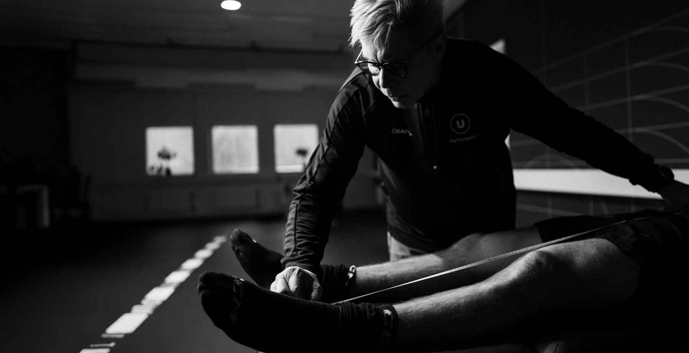
Den unga fysioterapeuten hette Dale Reese. Efter IFK Göteborg fortsatte han att arbeta med samma fråga i klubblag och landslag runt om i Sverige och Europa:
Vad behöver just den här spelaren för att nå sin fulla potential – och vad hotar den?
Skickliga spelare förlorade säsonger, och ibland hela karriärer, på skador som hade gått att undvika om någon mätt och följt upp i tid.
förlorar utveckling.
förlorar en startspelare.
förlorar poäng, lönekostnad och spelarvärde.
Med åren blev data nyckeln – för att fatta rätt beslut innan skadan var ett faktum.
I landslaget mötte Dale Gustav Svensson – född och uppvuxen i Göteborg, med 32 landskamper, VM 2018 och EM 2020 på meritlistan.
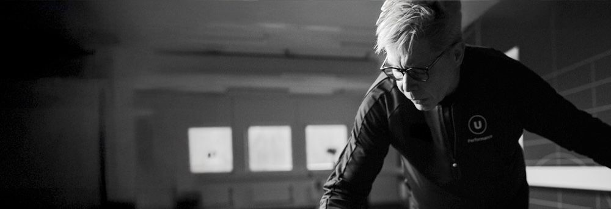
IFK Göteborg, klubblag och landslag runt om i Sverige och Europa.
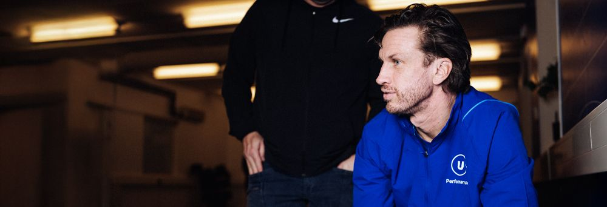
Född och uppvuxen i Göteborg. 32 landskamper, VM 2018 och EM 2020.
Gustav hade då redan varit proffs i Turkiet, Ukraina, Kina och USA, blivit svensk mästare med IFK Göteborg och vunnit MLS Cup med Seattle Sounders. Han spelade elitfotboll tills han var 38 år, med över 450 klubbmatcher.
landskamper, med VM 2018 och EM 2020 på meritlistan.
Landslagetklubbmatcher – proffs i Turkiet, Ukraina, Kina och USA.
Klubbfotbollenså länge spelade han elitfotboll. Svensk mästare med IFK Göteborg och MLS Cup med Seattle Sounders.
TitlarSvaret blev Uperformance – vi hjälper klubbar och spelare att undvika onödiga skador, så att spelarna står på planen och klubben får tillbaka det den investerat.
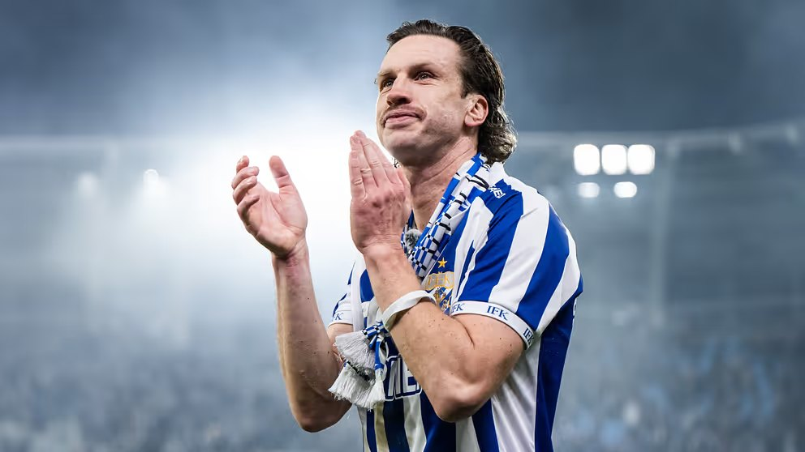
Tillgänglighet är den bästa värvningen.
Gustav Svensson kommer från en lång karriär inom elitfotbollen och har, tillsammans med Dale Reese – som i över 25 år arbetat med Sveriges främsta spelare – byggt upp ett starkt team av hälsoexperter och fysiologer. Roger Mellin, medgrundare och ägare, har över 20 års erfarenhet av ledarskap inom läkemedels- och medtechindustrin.
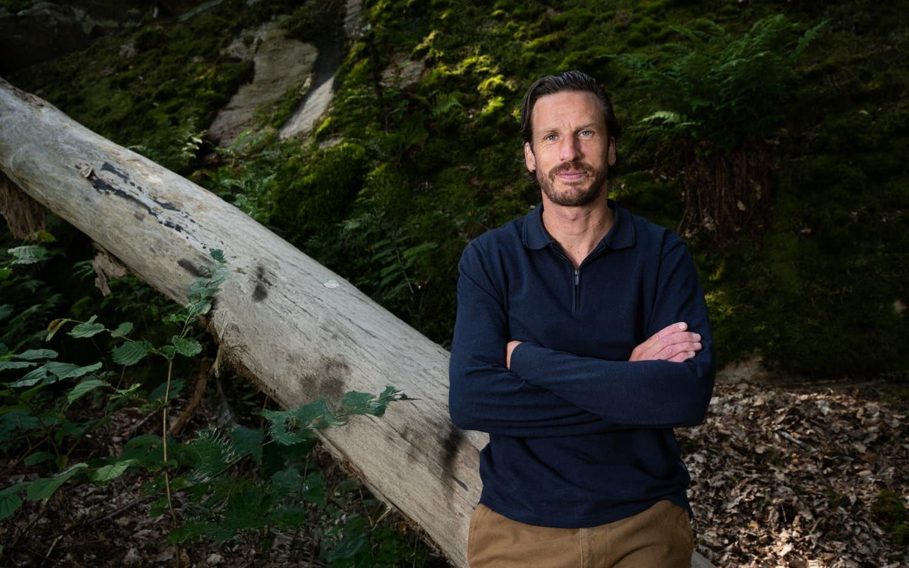
Vi hjälper företag att minska sjukfrånvaro och öka produktiviteten genom förebyggande hälsoarbete.
I dag är vi en drivande kraft som med mätbara metoder hjälper idrottsföreningar och arbetsplatser med förebyggande stöd mot ohälsa och sjukfrånvaro.
En del av våra intäkter går tillbaka till klubbar, ungdomsverksamheter och hälsofrämjande projekt.
Bas är vår grundläggande riskprofilering och ingår i alla paket:
Varje medarbetare får sina egna resultat i en personlig digital journal. Som företag får ni en sammanställd rapport på organisationsnivå med trender och rekommenderade åtgärder.
Medicinsk data hanteras av extern tredjepart. Innan testerna tecknas personuppgiftsbiträdesavtal och varje medarbetare lämnar sitt samtycke.
Ja. Rörlighetstestet i Bas är alltid branschanpassat, och med Branschpaketet skräddarsyr vi metodiken helt – för tunga lyft, skiftarbete, kontorsergonomi med mera.
Efter ett första möte får ni en offert. Medarbetarna fyller i ett underlag med testval och samtycke, och när ordern är signerad kontaktar vårt testteam er direkt för att boka tid. På testdagen onboardas alla även i appen.
Varje medarbetare får sin riskprofil och ett anpassat träningsprogram i appen. Ungefär två månader senare har vi ett uppföljningsmöte med er. Vill ni följa utvecklingen över tid gör vi omtest kvartals- eller halvårsvis.
Ja – det är där vi kommer ifrån. Vi hjälper klubbar med screening, benchmark mot andra lag och uppföljning, och ser till att ni uppfyller förbundens krav på årlig medicinsk undersökning.
Grundpaketet Bas börjar på 1 995 kr per medarbetare, exkl. moms. Hela upplägget – paket, tillval och program – räknar vi fram tillsammans med er på ett första möte.
Hör av dig så berättar vi hur – för hela arbetsplatsen eller hela laget.